第一節 溫室總體規劃設計
一、溫室規劃設計的方法論
溫室規劃設計方法有多種模式，如常
規流程設計法、系統化設計法及同步工程設計法。分別簡介如下：
（一） 常規流程設計法
溫室規劃設計常依農民種植經驗、現有土地面積及溫室工程業者的基本結構模式，以常規的流程設計進行。通常為溫室設計者以農民需求概念及成本考量下，進行基本型式選擇、成本概算、工期預估，經簽約後，進行細部設計、製造發包、組裝工程、現場安裝等流程工序。溫室一般設計模式主要依此般循序進行。
（二） 系統化設計法
歐美先進農業國家，發展出以定義設計目標下，設定符合目標需求規格，以系統分析所需的功能，模擬分析每項控制因子及其可能的替代方案，建立具體概念的溫室模型，進行設計與瓶頸評估，建立及測試原始模型。此決策支援系統，針對經營策略及操作選項，提供可靠且快速的評估。此系統化設計法於歐美先進國家已發展出以其溫室特色及模型的設計系統，但
因其是以溫帶的氣候特性與歐式的溫室模型下建立的技術累積，此並不宜直接套入熱帶亞熱帶的溫室設計，但其精神值得參考。
（三） 同步工程設計法
同步工程設計法， 強調所有設計程序，均在基本設計階段即進行總體規劃設計，此又名生命週期設計為汽車工業的常用設計法，即對其基本的功能需求，材料選擇、製程方法、組裝模式、運維管理、並考量到其對環境的影響，終其一生的生命週期設計，以完成總體規劃設計。可導入產品的品質機能價值分析，以價值工程評估的方法，評估產品從材料、製造到運用維護，及循環性經濟的整體價值評估。
故如能吸收溫室常規流程的經驗法則及先進國家的系統化設計法則，從溫室其存在的目的、設立的目標、應用的材料與方法、製造組裝所需的人力時間及能資源、運轉維護所需的人力物力與能資源等預期的成果，不管是經濟性、技術性、社會性及歷史性的貢獻，均是總體規劃分析不可缺的要件。採用同步工程設計方法進行總體規劃設計，將會同步考量作物生產作業系統、環境控制系統的整合運作。
二、溫室設計的發展歷程
溫室原為如溫帶或寒帶地區於寒冬中
仍可持續提溫及保溫的一項建築設施，而於農業設施的應用發展上，則因應生物與環境的對抗則不斷有新的設計與開發。
在面對環境載重的抵抗上，不同地區因其氣候與環境的差異，將面對各種不同的自然載重。對不同的生物養殖或農作物栽植，也需要各種不同的保護措施。而隨著季節的遷移，農業設施也需與時俱進的改變因應。所以因地制宜、因物制宜、因時制宜，將是農業設施持續進步的動力。如荷蘭等歐洲溫帶先進農業科技國的開發設計，其農業設施的發展歷史悠久更不斷優化創新中，其很多溫室和生產設備技術都是為瞭解決自身發展過程中存在的問題
而發明的，但不一定適合熱帶及亞熱帶低區之溫室設計。
在全球的氣候變遷下， 各地區亦將面臨的新的環境載重，往往超出數十年甚至百年的新極限高點。熱帶亞熱帶溫室所面臨的環境載重也將更形險峻，颱風、地震、暴雨、驟冷、嚴寒、酷熱、洪水、乾旱，都會不可預期的發生。溫室設置動機乃基於具經濟性效益的作物生產穩定性、優質化與高價值性的需求而投入，但基於溫室設計，實乃為一多科技融入的複雜工程，有賴多學門科學的共同努力，而非單一學門能獨立完成。因此，除了學習研究先進國家的溫室設計技術，也需要針對所面臨存在的問題，因物制宜、因利制宜、因地制宜、因價制宜的進行溫室系統的彈
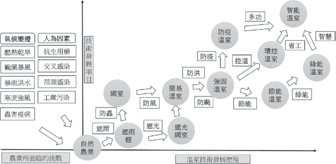
圖3.1 2015年台灣各類設施栽培面積比例。(行政院主計總處，2018)

性創新設計，以創造在多變環境下的新價值契機。
因應自然環境的變化，農業設施其技術發展歷程 (如圖3.1) 已從遮風、避雨、遮光、防寒的需求，從網室、簡易溫室、強固型的溫室，進而環控型的溫室、防颱型的溫室、防災型的溫室、防疫型的溫室，更進化到智慧型的溫室。現代化溫室為一相當多元的生物與工程科學綜合科技，包含生物科技、生產製程、環境控制、材料科技、機電控制、農業設施、建築科技、結構工程、建設工程等多項持續進步中的現代科技，而資通訊科技的大幅進步更造成農業也走入智慧化的應用領域。但農業設施溫室，還是要回歸食品安全、糧食穩定、經濟滿足的基本要項，所以基於作物品質、作業速度、運維成本的綜合考量，才是溫室設計的基本戰略準則。
（三一、）溫經室濟設性計考的量考量
溫室設置的經濟性的總體考量，在熱帶亞熱帶溫室，即要在設置成本、能資源成本、運維管理成本、壽命風險、生產價值上，發揮其高度的經濟性價值。故溫室設置需考量其經濟性的分析，其有以下幾種類型：
基於在地性作物的穩定性生產的新建溫室。
基於經濟性作物的價值性生產的新建溫室。
基於專業性作物的技術性生產的新建溫室。
基於多樣性作物的彈性化生產的新建溫室。
基於已有溫室與目標作物的調和性生產。而以上也許是單一項的經濟性的考
量，亦可多項同步的考量設計。
（二） 溫室規劃設計的技術考量
溫室構造設計需具備結構安全的農業設施建築，且需同時考量溫室生物生理需求性及生產作業方法實施的方便性、溫室環境控制的適當性與成本性，再綜合所在地的地理特性、作物的經濟性、溫室投資成本，進行整合性的整體規劃設計。其主要的考量設計包含以下三項：
載重分析
溫室構造須面對自身的靜自重載重外，尚須考量各種相關設施載重、吊掛作物生長載重、臨時作業如安裝維修載重。
環境載重
溫室還要考慮因地理環境地形地貌所形成的瞬間性環境載重，如風、雪、雨、冰雹、地震等直接載重，還有高溫、低溫或急劇溫差產生的變動載重。
不同的地理位置如經緯度，有很大的氣候差異，縱使同一區域也因地形地貌不同而有所差異，即使同一地點也因溫室不同的形式、高度、方位、方向、分布而有所不同的載重反應，年度之間各月有所差異，一天之中日夜也有所變化。
現代化的工業環境控制技術成熟，似
乎很容易達成溫室內的物理性環境控制，但深究其完整的科學原理，溫室內的區域環控要求有更多的物理性、化學性之影響性因素。
物理性參數
包含光線 (光量、光質、方向性、分布性、累積性)、溫度 (絕對性、差異性、穩定性、根區葉區分布性)、濕度 (相對濕度、飽差)、氣流 (流速、流向)、品質 (PM2.5) 等物理參數。
化學性參數
包含生長空氣 (CO2、O2)、有害氣體 (NH3、H2S)
（三） 溫室構造對生物微環境生理的反應
溫室構造影響了進入溫室的光、溫、
濕、流、氣，故同時影響了栽培生物本體生理反應，如根、莖、葉、花、果的生理生長影響，也影響到溫室內進行花粉蟲媒的蜜蜂生存，同時也影響到土壤介質中的微生物，但也同步可能促進有害病蟲害生長及致病微生物孳生。
（四） 溫室構造設計基本原則
溫室的分布、座向、方位、地形、地
貌都會影響到陽光的分布與風場的流動，除造成作物生長的限制，也會造成局部集中強風效應，導致溫室承受極大風壓。
地質及地基結構，將影響溫室基礎的強弱及基礎設計的根本。
水土保持與排水機制，將因土壤富含水分造成鬆動，溫室支撐柱受強風吹襲將致移位或基礎的沉降。
常年的溫室外部溫度、濕度、風向、
風速、陽光，將直接影響溫室內部的環境控制模式及運維能資源成本。
颱風經過機率較高之區域，則需提升溫室之耐風等級。
暴雨之下之溫室排水槽設計須考量排

94
水量及結構強度，尤其多連棟的溫室排水設計，以避免溫室屋頂積水增加結構負擔。
基於作物的生長所需的陽光需求，溫
室設計須先進行被覆材料的選擇，而其被覆材料的承載屋面結構，將影響整體溫室結構系統的設計。
溫室的結構系統形式亦須考量風力載重的巨大影響因素。
溫室之結構材料的選擇與基礎之強度設計，需考慮變形、應力承受、抗彎強度等綜合考量。
對溫室結構的連接件角色扮演，要確實掌握與落實載重的傳遞設計。
溫室材料表面處理為防蝕處理之重要
工作，化學性、物理性、電化學性腐蝕會造成結構材料腐蝕，使結構強度減弱，無法承受大型風壓或其他載重。
（五） 溫室構造的總體規劃設計
溫室構造的總體規劃設計，將如圖3.2提出的同步工程設計循環。以溫室作物為起點，進行此溫室的生命週期設計。其各階段設計如下：
作物的選擇性分析 (包含經濟性、技術性、社會性)。
作物的經濟性分析 (包含市場性、獲益性、商業性)。
作物的技術性分析 (包含環境控制、運維管理)。
作物的社會性分析 (包含需求性、人力)。
所在地外在環境分析 (包含地理地形
地貌、常年氣候與環境變遷因素)。
溫室內物理性環境控制需求 ( 溫濕度、風速風向、陽光)。
溫室內化學性環境控制需求 (CO2、 H2S、NH3、PM2.5)。
溫室內生物性環境控制需求 (微生物控制、生物病害防治)。
地理地形地貌分析。
氣候型態與極端氣候變遷風險因素分析。
作物生長需求與環控需求分析。
溫室結構型式選擇分析。
日本溫室設計規範。
歐洲溫室設計規範。
美國溫室設計規範。
中國溫室設計規範。
台灣溫室標準設計圖說。
溫室安全構造手冊 (台灣農業設施協會)。
溫室結構靜載重。
溫室農業設施載重。
風力載重。
地震載重。
作物載重。
維修載重。
外環境常年流場分析 (風速、風向、
流場、溫度場)。
內環境流場分析 ( 風速、風向、流場、溫度場)。
作物所在位置流場分析 (葉面、根區)。
被覆材料選擇設計 (透光特性、結構
安全性、成本性、壽命性、風險性)。
被覆結構設計 ( 溫室形式、屋架型式、屋架結構)。
材質 (材料化學組成、物理性能、機
械性能、化學性能)。
形式 (管材、型材、斷面係數、彎曲強度)。
形貌 (表面處理、鍍層、塗層、覆層)。
機能 (結構性、耐蝕性、風險性、壽命性)。
屋架型式 (圓形、山形、單斜)。
屋架結構 (平行桁架、屋面桁架、圓形桁架)。
柱。
樑、桁架、框架。
斜撐、補強。
結構形式選擇。
材料結構選擇。
載重分析。
結構工程分析。
補強設計 ( 結構強化、加強肋、斜撐、繫桿)。
地質鑽探。
水文分析。
地形地貌。
溫室載重分析。
柱底載重分析。
基礎材料設計。
基礎螺栓設計。
基礎形式選擇。
基礎設計。
基礎結構工程分析。
連接方法設計。
連接元件設計。
連接點處理設計。
連接點載重分析。
連接點工程分析。
運轉管理設計 ( 作物生長、環境控
制、人力運作、商業管理)。
維護管理設計 (常年維護、氣候變遷緊急維護)。
能資源設計 (節能控制、綠能應用)。
除役設計 (循環經濟型材料技術)。
溫室作物種類及生長需求設計。
溫室環境控制需求設計。
溫室構造平面分布圖。
溫室構造基本設計圖 (包含屋面、主結構設計、基礎設計)。
溫室材料設計選用 (包含被覆材料、結構材料)。
溫室耐風等級分析。
溫室建造成本分析。
溫室工程進度分析。
溫室能資源需求分析。
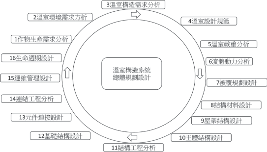
圖3.2 溫室總體規劃系統

第二節 溫室構造設計理論
溫室設計是一門需整合農業與工程的綜合科學，針對溫室相關應用的基礎工程科學理論整理，以協助科學化理解溫室設計的原理。
一、光學
光是農作物光合作用的主要驅動因
子與能量來源，而溫室的主能量亦來自陽光，故瞭解光學基本原理相當重要。光學上基本的理論包含：
（一） 光的直射性
光於真空中為直線進行，光線由太陽射出，但進入大氣層後，將隨雲層影響而能量有所損失而被局部遮蔽。
地球隨季節變換相對太陽有著不同日光的入射角度，亦因所在地理位置及地形地貌，每日光線入射的角度與能量均不同。
方位，將可掌握溫室全年可能受光的能量變化。但隨天氣的變化，如雲層分布變化，實際受光值亦隨之變化。
同理，基於光的直射性，當預溫室的結構元件時，則形成的光的遮蔽，而阻擋了光的前進，故溫室結構元件的應用，降低了光的透光率，以簡易型的溫室為例，
光被結構支架的遮蔽率約10％左右。
（二） 光的反射性
光直線射向物體，由其表面就將產生光的反射，光的反射性原理為相對於垂直表面的法線，入射角等於反射角。針對反射率100％且完全平整的物體表面，且光能量並未被物體所吸收，則能量全反射才得以實現。
所以光通過被覆的透光膜時， 部分的光將被反射，也將降低光合作用的光源性。但也依上段光的直線性所言之結構支架的遮蔽時，如給予高反射性的塗層 (如白色漆)，此又會因光的反射性提高溫室內所需要的陽光。
（三） 光的折射性
溫室的主要被覆材料，有玻璃、軟質塑膠膜、硬質塑膠板等透光性材料，故其對光通過時的改變模式，將影響到溫室內諸多的物理、化學、生物作用的變化。
而現有的透光被覆材料，則利用其表面的紋理模式設計，形成一般性的直線性透光膜或散射性的透光膜，以散射性的透光膜為例，對有局部遮光的作物而言，提
供了光的均勻度，減少遮光的效應。
（四） 光的能量性
光帶來了能量也同時帶來了熱源，所以溫室內的溫度可透過光的直射性、反射性、折射性，調整光度也調節熱量。
而溫室內的結構件如柱、樑、鋼架、桁架、屋架則同時是的光的遮蔽件及反射件，其往往遮蔽光學的路徑10％左右，故施予高反射性塗層，除可提高反射性的光，並可降低對溫室結構支架內的熱累積，對溫室的室內溫度亦有相當的影響。
（五） 溫室光學特性
光的能量與累積、照度與均勻性、波長及控制。
光的直線性、反射、折射、漫射之應用及其影響性。
透光材料的材質、透光性、表面形貌的控制及其影響性。
透光材料上的物質累積對光的影響性及處理 (如灰層、髒污)。
透光材料內的物質生成對光的影響性及處理 (如綠苔、水滯)。
透光材料的劣化對光的影響性及處理。
構造元件的結構與表面形貌對光的遮蔽性、反射性及光熱的累積性影響分析。
二、熱流學
溫室處於大自然下，將直接面臨季節
性的風動、高低氣壓鋒面、寒流、熱帶氣旋及颱風，季節性的雨及異常性的暴雨，所以溫室設計上對流體力學亦應有以下的相對認識。
（一） 熱的傳遞
熱的傳遞有三大主要模式：熱輻射、熱傳導、熱對流。故於溫室內的溫度場控制模擬與設計分析須充分考慮結構系統與空間流場的熱的傳遞模式。
（二） 熱的擴散
高溫往低溫擴散、高溫氣體往高處逸散、低溫氣體往低處對流、高壓往低壓擴散。故溫室的散熱或保溫都需善加應用熱的擴散模式與途徑。
（三） 熱流的能量轉換
熱能、壓力能、位能、動能的能量總和不滅。故對溫室內的能資源設計管理、節能設計等均須注意熱流的能量轉換控制模式。
（四）溫室外的流場
不同角度方位的風速與風壓對溫室結構的影響性。
颱風路徑與氣旋模式對溫室結構的破壞性。
季節性的常態風對溫室溫度的控制性。
（五） 溫室內的流場
溫室內的熱對流模式對溫室內溫度場的影響性。
溫室內的熱輻射模式對溫室內溫度場的影響性。
溫室內的熱傳導模式對溫室內溫度場的影響性。
溫室內所有溫度、濕度及空氣流動對生物的影響性。
三、材料學
溫室內的結構件如柱、樑、框架、
桁架、屋架，被覆材料如玻璃、軟質塑膠膜、硬質塑膠板等透光性材料，甚至是基礎件之混凝土與鋼筋及級配的砂石土等，均屬材料科學的範圍。
材料的材質：化學組成、材料編號、材料定義。
材料的機能：物理性能、化學性能、機械性能。
材料的成形：鑄造成形 (重力、壓鑄)、塑性成形 (沖壓、折彎、輥彎、軋延)。
材料的加工製造：機械加工、沖孔、雷射切割。
材料的組合連接：機械連接 (螺絲螺帽、高張力螺栓、自攻螺絲、鉚接)、膠合、銲接。
材料的表面處理：腐蝕因子 (物理性腐蝕、化學性腐蝕、電化學腐蝕、生物性腐蝕)、腐蝕防治與防蝕處理 (陰極處理、犧牲陽極、鍍層、塗層、覆層處理)。
材料的破壞分析：材料的應力應變與溫度的影響分析、延性材料與脆性材料破壞模式、週期性載重與疲勞分析、熱與時間性的潛變、力的形式與破壞模式、破壞分析與處理。
四、結構學
溫室內的結構件、被覆材料、基礎件
及其相互間的連結件，構成溫室的結構系統，故溫室構造設計最重要的工程科學為結構學。
以溫室結構進行環境載重的抵抗時，則往往要強化溫室的結構設計，故應以先掌握溫室所處環境可能面臨的環境載重攻擊分析，再進行最適當方位的結構形式，針對可預知型的攻擊模式，進行輔助的結構設計。
而針對結構系統的各個結構元件進行細部研究分析，可針對整體結構能量過與

不及時的可輕量化或補強優化設計。
樑的型式與應力應變模式及結構變形分析。
柱的型式與應力應變模式及結構變形分析。
桁架的型式與應力應變模式及組合結構變形分析。
鋼構的型式與應力應變模式及組合結構變形分析。
屋架的型式與應力應變模式及組合結構變形分析。
基礎的型式與拉拔及沉降抵抗分析。
連接件的型式與載重傳遞分析。
溫室結構總體設計分析。
五、溫室電腦輔助工程分析
隨著溫室設計的大型化及複雜化，應
用電腦輔助工程分析技術，可進行溫室設計的電腦工程模擬分析，以利決策判斷，選擇最適方案。
（一）光學分析
光學分析，可於溫室設計之初，依所在地點及周邊的建物及遮蔽物，進行光路模擬分析，可預估光合作用的整體光能量分布。
進行溫室所在地的地理位置全年太陽
光的日照路徑與能量分析、結合溫室自身及周邊建物的光路分析，以計算可行光合
作用的光能量分析。
溫室結構材料對光的遮蔽性將影響溫
室內植物的總受光量、光均勻度及其結構材料受光輻射吸收的熱量。
溫室高度對溫室內栽培物的分布形
式、植株高度、葉片形式所形成的陰影或散光型被覆材料將有不統的影響度。
溫室的南北向或東西向分布、獨立
棟、雙連棟、多連棟對光的分布性，其包含總光量及均勻度分析。
（二）流體動力分析
因應溫室所在的地形、地貌、地理環境，溫室的分布及具體尺寸形貌，透過流體動力分析，可模擬出溫室內外的流場及溫度場，以利調適設計。
可參考氣象局之歷年颱風路徑及常年
最大風速，以流體動力分析軟體，進行溫室所在之地理地形地貌之流體動力分析。
可參考常年所在地流場的風速風向及
溫濕度，進行外部流場動力分析，進而可設置流場的流動控制以利協助溫室內部流場風場溫度場環境控制。
可依據作物葉面或根部所需溫度場及
風場，進行內部流場動力分析，以調控環控設施及未來溫室設計。
（三）材料工程分析
因應材料科學的進步及現有材料的選擇比較分析，經過工程材料分析法，可得材料的性能強度及預期的可靠度分析。
針對選用材料進行實際材料的適當工
程分析實驗，取得材料實際的性能參數，以利進行後續的結構工程分析。
針對個別元件及元件組合，進行化學
性能與電化學性能的腐蝕試驗，以分析個別抗蝕性能及開發新的防蝕組合模式。
針對新型結構材料與元件，進行材料
結構力學與化學電化學性能試驗，以開發新型優化結構材料。
（四）結構工程分析
根據選定的溫室型式，溫室主體結構
可由結構分析軟體進行主結構工程分析，以利溫室型式及材料選擇設計。材料元件連結細部結構可由有限元素工程分析進行優化設計。選擇各種材料的種類、尺寸、性能強度。
進行溫室結構與設施靜載重計算，加
上風力載重中之流體動力載重參數及其他載重。
分析各種載重下之結構材料應力應變。
各種型式與應力應變模式及組合結構變形分析。
圖3.3 溫室總體規劃系統


第三節 溫室構造系統設計
一、溫室構造系統的設計邏輯
基於溫室生物生產作業、溫室環境
控制、溫室結構載重抵抗等三大議題彼此關聯，故溫室作物生產系統、溫室環控系統、溫室構造系統，是現代化溫室科學化設計所需建立三大系統 (如圖3.3)，可依序進行規劃設計，但更需依同步工程法則進行循環分析設計，而非各自分工獨立設計。溫室構造系統的設計邏輯需同步考量以綜合設計出符合經濟性、成本性與價值性的可永續營運的溫室。
（一） 作物生產系統
溫室作物生產系統為溫室設置的最重
要初步設計，作物的種類、作物生長的關鍵因素與控制程序，定義所需的陽光、空氣、水、營養成分及適當的介質，衍生所需建立的作物載具、生產物質及資源供應系統，也定義應有的環境要素與構造基本條件，以利後續溫室環境控制系統與溫室構造系統的設計。
（二） 環境控制系統
基於溫室生產工程的程序設計， 以進行溫室環控設施系統設計，在溫帶或寒帶以加熱保溫為溫室主要於寒冬的控制工程，但於熱帶亞熱帶則陽光控制、溫度控制、濕度控制、空氣控制、疾病控制等都
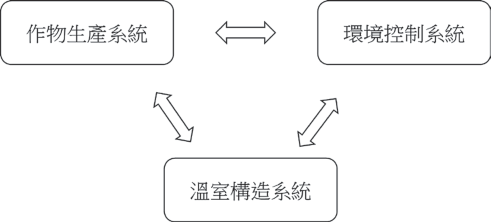
是所需的因地制宜防禦工程設計。也基於事先的環控設施系統規劃設計，將有利於溫室構造設計及總體規劃設計。
（三） 溫室構造系統
溫室結構系統包含了鋼架 (樑、柱)、屋架、基礎等主結構件，另包含被覆、桁架、斜撐、繫桿、連結件等次構件。而力的傳遞，則由被覆材料傳遞到屋架、然後經過鋼架、桁架、樑、柱、基礎，傳遞到地面，而期間所有力傳遞過程的元件均須承受相對的應力應變，故每一構件的正確扮演載重的共同抵抗及回復，才能保持其長期的穩定。
二、溫室構造系統簡介
溫室構造系統 (如圖3.4)，其主要子系統如下：
（一） 結構系統
被覆屋面是溫室結構的第一項設計選
擇，主要被覆材料包含玻璃、硬質塑膠、軟質塑膠膜。
主要由作物所需的透光模式而決定，但面對的環境載重及成本考量，也是重要的影響因子。被覆結構影響溫室整體結構極大，往往是壽命最短且強度最弱的結構，故其除為作物生產系統的關鍵材料，
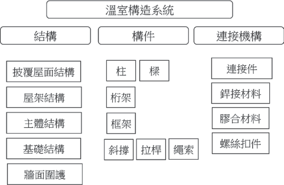
圖3.4 溫室總體規劃系統

其亦攸關溫室構造系統的安全。
柱的型式可以方管、圓管、H型鋼、C
屋架結構系統基於被覆屋面的所傳遞的載重承接，需設計安全性的屋架結構系統，並能延長被覆材料的壽命。
以樑、柱、桁架、框架組成主體結
構，支承於基礎之上。
以獨立或連續基礎支持溫室主體結構
及各項載重。
以牆、網、膜，形成結構或流場的
控制。
型組合型鋼等形式設計，柱將承載來自屋架、樑及外部等垂向載重及橫向載重 (如風載重)。
柱承受垂向載重除考量材料的抗拉強度與降伏強度，並須考量挫曲彎曲的抵抗，並同時考量與連接基礎的抗壓性、抗拉性及抗扭轉性。因柱所在位置如於溫室周圍受外部強載重處，則須強化柱的橫向載重抵抗，如非對稱性型材可以加強性方向設置，但須注意抗扭轉性。如為對稱性型材如圓管或方管，則需補強其高載重方向結構，如斜撐或拉桿。
（二） 構件元件
平面結構桁架 (truss)
，主要以上下平
1. 樑
樑的型式可以方管、圓管、H型鋼、C
行的上弦樑與下弦樑，及中間斜向的腹桿組成，平行桁架的基本連接模式為各元件
型鋼、C型組合型鋼等形式設計，大跨距時亦可以桁架設計。
樑承載橫向載重， 將載重傳遞至柱及周邊元件。樑的載重能力，以材料的抗拉強度、降伏強度、延伸率等基本材料參數，材料的形狀更直接影響斷面係數， 如樑為非對稱型材如I型鋼、H型鋼、C型鋼，需注意其與受載重方向性關係有加強性方向及減弱性方向。
以鉸接連結，力的傳遞以軸向載重傳遞將載重可通過腹桿件以軸向載重傳遞。
框架 (frame) 為強固型連結的立體結
構，其形成主結構的強固型核心，當結構受大型載重時，其可以框架結構承接抵抗。框架可以大型的H型鋼組成立體結構，但因其為大型建築用鋼，往往過重，且形成重心過高。框架亦可以雙桁架形成輕量化且高強度的框架結構。
補強結構包含斜撐 ( 可於主結構補
強)、拉桿 (可於柱間或屋架抗拉補強)、 繩索 (被覆材料抗拔補強)。溫室結構為裝配式建築結構，如為提高抗環境載重抵抗，最經濟且有效的方法是結構補強。
（三） 連結機構
各子結構系統與結構元件組合方法，均需連接機構組合，除進行形狀的組合，並將形成載重的傳遞關鍵元件。連結機構的主要方法包含機械結合 (如機械嵌合、連接件組合、螺栓接合、自攻螺絲組合)、銲接結合、膠合。
三、溫室構造設計流程
以生物生長及光線需求分析進行決
策分析。
溫室型式選擇、基本尺寸、連棟與排
列的平面分布、結構材料選擇及設計、基礎模式的選擇設計。
靜載重。
設備載重 (環控、灌溉、農業設施)。
作物載重 (吊掛設施、作物成長)。
環境載重 (風、雨、雪、地震)。
變動載重 (安裝、維護、溫度變化)。
風力係數查表法 (依各地規定的風力
設定等級)。
流體動力分析法 (CFD)。
局部風壓強化設計。
溫室主結構設計。
溫室結構工程分析。
基礎載重分析。
基礎地層探測分析。
基礎設計。
基礎拉拔測試分析。
連接方法及元件設計。
連接工程分析。
溫室結構優化設計 (輕量化與結構強
化)。
溫室結構強化設計 (內外部斜撐與拉桿補強)。
溫室破風強化設計 (外部破風結構設計分析)。

四、溫室結構設計與工程分析
（一） 溫室結構設計 （二）溫室結構工程分析流程
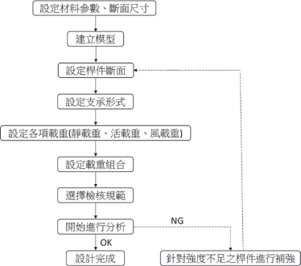
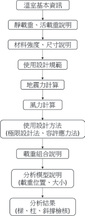
圖3.5 溫室結構設計流程
圖3.6 溫室結構工程分析流程
（三）日本溫室結構工程分析設計
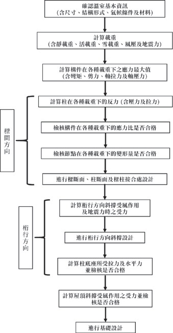
圖3.7 日本溫室結構設計與工程分析
五（一、）溫以室溫的室基構本造結構構造分類
以鋼構之樑、柱，及鋼鋁之型管材等
構件屋面作為骨架，橫樑及側樑以型材結構加強，屋面可為山型、圓形或單斜背等幾何形狀，具有固定基礎的設施。
利用錏管加工成組合型骨架，支柱下端直接插入地面下，可不具固定基礎的設施。
（二） 以溫室棟數分布分類
單一屋面構成的設施。
二個以上連續屋面構成的設施。
單棟獨立分布、多棟以二連棟、三連棟或多連棟分布。
（三） 以溫室溫面被覆材料分類
玻璃溫室。
硬質塑膠板溫室。
軟質塑膠薄膜溫室。
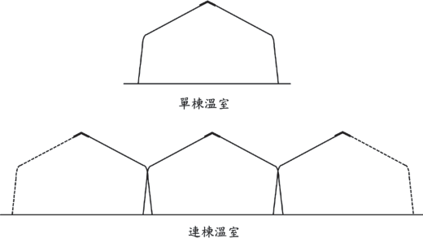
(山型屋頂)
六（一、）溫結室構構型造溫元室 件
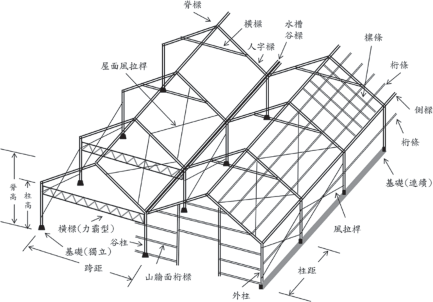
圖3.9 結構型溫室 (山型屋頂) 各部構件名稱
（二） 結構型溫室 (圓屋頂)
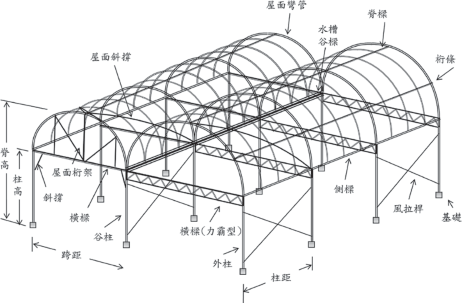
圖3.10 結構型溫室 (圓屋頂) 各部構件名稱
（三） 簡易型溫室
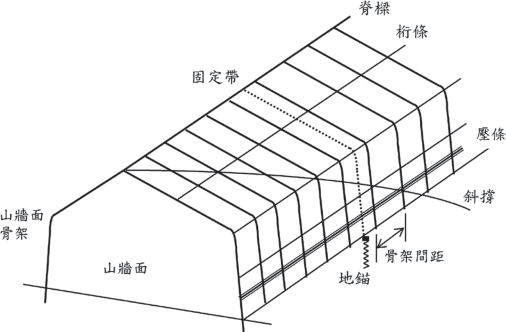
圖3.11 簡易型溫室各部構件名稱
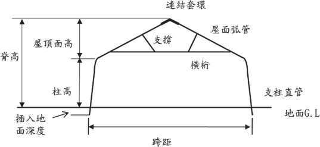
七、溫室載重分析
溫室設計載重為各國溫室設計規範的
基本要項，其載重的主要組合 (如圖3.13 )
包含：
（一） 永久載重 (靜載重)
主要為溫室之主結構 (被覆與結構) 及結構上連接的固定設備重量。
（二） 可變載重 (活載重)
包含風、雪、地震、溫度等環境載重，作物、維修、運搬等作業載重。
（三） 載重組合
依規範別、時間性、區域性、應用性而有不同的載重組合。
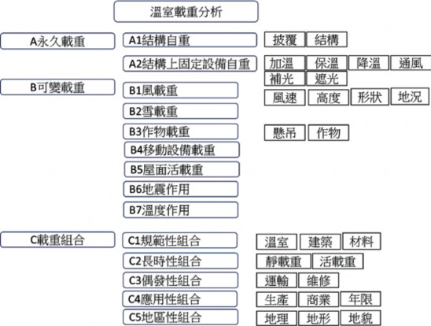
圖3.13 溫室載重分析

八、被覆規劃設計
溫室依據其農業施作需求，可選擇不
同的被覆材料，包含陽光、空氣、風、水的通過，或蟲害、污染、冷風、烈日的遮蔽，但因其具相當大面積的溫室屋頂與牆面遮蔽材料，將直接承受風、雨、雪的衝擊並將載重直接傳遞至溫室結構上，溫室被覆材料是攸關作物生產品質與產量，又同時牽涉溫室結構安全的關鍵部材。
而溫室的設計分析往往假設被覆材料仍於完整且形成封閉區間的受載重狀況，一旦於其生命週期中的局部破損，恐導致整體載重的劇烈改變，而使溫室結構遭受更大的衝擊。溫室被覆材料除考慮其於全新狀況下的性能表現，對其隨時間的推移所形成的材料性能劣化也是一大監控要素。
（一） 被覆材料之分類
玻璃 (CNS R2013)。
軟性薄膜 (CNS K3007/JIS K6732， K6783)。
硬質塑膠 (CNS 3034/JIS A5701)。
（二） 被覆材料之特性
尺寸、比重、硬度、耐久性。
透過性、波長別透過性、透明性、全
光線通過率％、遮光性、散光性、光質。
保溫性、斷熱性、通氣性、耐候性、
耐熱性、耐寒性、熱傳導 (W/Mk)、熱膨脹係數 (/℃)、比熱 (J/kg.K)、熱收縮率 (80℃, 30分鐘)。
滴流性、 防霧性、透濕性。
引張破裂強度 (Mpa)、壓縮強 (Mpa)、
伸長率 (％)、彎曲強度 (kg/cm2)、低溫衝擊強度 (J)、落球實驗 (kgm)、展開性、開閉性、伸縮性。
耐藥品性、抑藻性、自然可分解性、可燃燒性。
（三） 主要被覆材料之性能控制參數
玻璃 (SiO2)
基本參數 (種類、材料成分、形狀尺
寸精度、抗張強度、耐風壓力、透光度)。
光學特性 (自然光全光線透光率、散亂光性、紫外線透過性、紫外線調整性、遮光性、光質)。
機械性能 (抗張強度、引裂強度、耐風壓力、延伸率、低溫衝擊強度)。
物理性能 (密度、厚度、寬幅、重量)。
熱學性能 ( 保溫性、耐熱性、耐寒性、熱收縮率)。
機能性 (滴流性、防霧性、耐藥性、抑藻性)。
耐久性 (耐候性、耐久壽命、機械性能衰退性、光學衰退性)。
環保回收性 (自然可分解性、可燃燒性)。
主要規格項目
主要種類及材料
薄膜種類、材料成分、形狀尺寸、抗張強度、耐風壓力、透光度。
農業用聚氯乙烯塑膠布 (PVC)。
農業用聚乙烯塑膠布 (PE)。
農業用乙烯-醋酸乙烯共聚合塑膠布
(EVA)。
農業用聚酯塑膠布 (PET)。
農業用聚烯烴膜 (PO)。
重要參數
農業用四氟乙烯塑膠布 (ETFE)。
光學特性：自然光全光線透光率、散亂光性、紫外線透過性、紫外線調整性遮光性、光質。
機械性能：抗張強度、延伸率、引裂強度、低溫衝擊強度。
物理性能：密度、厚度、寬幅、重量。
熱學性能：保溫性、耐熱性、耐寒性、熱收縮率。
機能性：滴流性、防霧性、耐藥性、抑藻性。
耐久性：耐候性、耐久壽命、性能衰退性 (機械性能、光學特性)。
環保回收性：自然可分解性、可燃燒性。

主要種類及材料
農業用玻璃纖維板 (FRP)。
農業用玻璃纖維壓克力板 (FRA)。
農業用聚丙烯壓克力板 (MMA)。

主要形狀
農業用聚探酯板 (PC)。
重要參數
平板、波浪、複層板。
光學特性：自然光全光線透光率、散亂光性、紫外線透過性、紫外線調整性、光透過性、分光透過性、光質。
機械性能：抗張強度、延伸率、引裂強度、衝擊強度、落球試驗、彎曲強度。
物理性能：密度、厚度、寬幅、重量。
熱學性能：熱傳導率、保溫性、耐熱性、耐寒性、熱收縮率、燃燒性。
機能性：滴流性、防霧性、耐藥性、抑藻性。

耐久性：耐候性、耐久壽命、性能衰退性 (機械性能、光學特性)。
環保回收性：自然可分解。
九、結構材料設計
溫室結構材料中的金屬材料具有高度
的工業化、高剛性、高強度且具環保型的回收性，其占溫室材料總重90％以上，是現代溫室最主要的結構材料。
結構所使用的金屬材料包括結構用基本金屬材料 (如鋼材、鋁材)、型管材 (型材、管材) 及接合物 (如螺絲、 鉚釘、螺栓、螺帽、墊片與銲接材料等)。材料應符合國際材料標準，接合物亦須符合規定。結構用金屬材 (如板、片、棒、線、連接材) 所使用之材料，其化學成分、機械性質均須符合國際標準之上的規定。品質之認定方法，通常先依原生產工廠所出具之品質證明書。但對各項材料如有安全考量或有爭議之虞，應共同取樣，經合格之第三方公證單位檢測。
於農業溫室往往溫室業者與農民間，對材料專有名詞總被簡化成簡易的說法，但實際的管材材質、管徑、厚度、精度將直接影響到管的機械性能，而鍍膜的材料組合、鍍層厚度、鍍膜方法，均將影響到鍍膜結合強度、鍍層耐腐蝕能力、管材壽命等。
故溫室的結構材料需確實掌握所設計構件之材料的質 (材質與性質)、形 (尺寸與形狀精度)、貌 (表面處理)、能 (物理性能、機械性能、化學性能) 等重要設計參數與標準規格。此將分三大部分說明，分別為基本金屬、型材、管材，將各別討論其對應的質、形、貌、能等設計參數。
（一） 常見的金屬基本結構材料
主要有鋼材、鋁材。
溫室常用鋼材有三大類，分別為碳
鋼、不銹鋼、鑄鐵。
針對常用的鋼材，其對應之國際標準材料編號、材料組成元素、材料形狀尺寸精度、材料表面處理、材料性能需有明確的說明。
材質
完整的材質說明應包含下列項目：
基材名稱
功能性名稱＋材料名稱，如構造用熱軋鋼。
基材編號
材料標準＋材料編號，如SUS 304。
基材化學成分組成
化學元素＋％，如Ni 8％。
完整的化學成分組成將以成分組成表格顯示。
基材來源
鋼胚的來源則有高爐廠與電爐廠，其材料的組成模式有所不同。 故基材來源應由供應商提供原產鋼廠的出廠證明，代表明確的材料來源。
基本金屬材質標示法
標準化的鋼廠出廠的出廠證明，須至少明確標示鋼廠名稱、化學成分、機械性能及依據的國際標準。
形狀
基本金屬材料形狀主要分為板材與棒線材，其說明如下：
鋼廠的基本鋼材分別由不同的中間成形廠完成，如鋼板廠、熱軋廠、 冷軋廠、棒線廠等， 有其不同的生產模式及品質狀況。
形狀別與尺寸包含了中厚板材 (t≧ 15mm) 、熱軋帶材 (20mm ≧ t ≧
1 . 6 m m ) 、 冷 軋 帶 材 ( 0 . 4 ≦ t
≦ 4.5mm) 、線材 (d ≦ 5.5mm) 、棒材 (d>5.5mm)。
板材通常其生產有冠高 (crown) 中間會偏厚，分條處理後兩側可能不同厚，其尺寸標示需含長度、寬度、厚度與精度。板材因受冠高因素難以理論計算，故以整捲重及總長度量測計算等寬之單位長度重量。
棒線材之外徑尺寸、精度與真圓度。棒線材直徑因受真圓度之影響，不易快速量測，故單位長度重量，方便於量測與快速檢驗。
表面形貌
基本金屬軋延材的表面特徵有黑皮表面 (熱軋材料表面，表面具原熱軋冷卻後銹皮)、精整表面 (熱軋精整表面，表面平整且具均勻的降伏應力)、冷軋表面 (經酸鹼洗及冷軋延後之精密表面)。
基本金屬鍍面材的定義須包含其鍍膜材質 (鍍鋅、鍍鋁5％鋅、鍍 55 ％鋅、鍍鎂鋁鋅)、鍍膜方法 (預鍍、後熱浸鍍、電鍍)、鍍膜厚度等。
基本金屬預塗烤漆材的表面結構包含塗膜層數 (底漆、中漆、面漆)、塗膜方法 (連續塗漆、粉體烤漆、手工塗漆)、塗層材質、塗膜厚度。
基本金屬複合材基於特殊功能需求可結合高分子材料複合成新式複合材料，使其具有新式機能。其主要結構包含混合材料複合 ( 如瀝青)、纖維材料複合 ( 如玻璃纖維)、層狀材料複合 (如橡膠或塑膠)。

材料性能
材料主要性能為機械性能、化學性能、加工性能。
機械性能包含降伏強度 (YS)、抗拉強度 (TS)、抗拉降伏比 (％)、延伸率 (％)。
化學性能包含耐蝕性能 (鹽霧試驗)、耐酸性能、耐鹼性能與耐有機物質特性。
加工性能包含一般料 (CQ)、拉伸料 (DQ)、深衝料 (DDQ) 等加工成形特性。
基本鋼材材質由其基本化學元素組成，其性能則由合金的添加、熱機處理的施作、塑性加工變形以強度提升，但相關機械性能、化學性能及加工性能均因此而有所變異，而性能往往無法全面性提升，需注意真正的應用設計需求。
鋁材不若鋼材的高強度，但鋁材因其
輕量化與可彈性設計的擠型材，常應用於玻璃溫室、硬質塑膠溫室、ETFE溫室等。鋁合金因其合金組成有多種系列、成分組成及並因應結構強度提升及表面特性有多種對應之熱處理，需因應環境載重需求下之陽極處理及塗膜處理。這些均會影響其應有的強度及衍生的安全性及可靠度。
鋁材的主分類
鋁材依其合金成分組成，分成A1000系列、A2000系列、A3000系列、A4000系列、A5000系列、A6000系列、 A7000系列等，各自有其材料特色及性能。常見之5000系列：鋁鎂合金，可解決加工硬化，強度較高。6000系列：鋁鎂矽合金，易於加工，可沉積硬化，得到較高強度接近一般鋼鐵。
溫室結構鋁材的規格表示
包含材質明確的材料編號 ( 如常用 A5052、A6061、A6063)、熱處理
( 正確的熱處理，如常用的T5 熱處理、T6熱處理)、陽極處理 (適當的陽極處理製程與膜厚)、塗覆處理 (適當的表面塗層、封孔處理、耐蝕覆層處理)。
（二） 常見溫室結構材料形式
溫室結構中，型材可創造形狀強度，
並適當的組合設計後可形成具有高組合強度的結構系統，但基於溫室結構安全，任何型材的強度及壽命，仍需從其材質、形狀、表貌、機能等四項進行綜合考量設計。型材的基本材質將決定其基礎強度，且型材具有其方向性的差異，故選擇高強度材質為基材，同時考量載重的方向性，
可得輕量化且高強度的組合型材。
但結構材料中的斷面，需注意選擇不易扭轉的二軸對稱面，在受扭力模式下需特別注意，如樑柱中，受力的方向性，力的模式如軸力、拉力、壓力、扭力、剪力都需注意其載重抵抗的穩定性。在較薄的型材使用下，斷面模式、旋轉半徑、材料強度，均需考量其挫曲的風險性。型材組合件，則需考量其結露水或雨水的滯留，污染物的堆積，焊道的後處理，避免衍生化學腐蝕與電化學腐蝕，降低壽命與結構安全。
以下針對型材的各方面性能需求定義如下：
型材之材質說明應包含材料種類、材料編號、化學成分組成、基材性能。
型材形狀包含H型鋼、L型鋼、I型鋼、C型鋼、扁鋼、異型鋼、組合型鋼等。成形方法包含了熱軋型鋼、冷彎型鋼、銲接型鋼、組合型鋼。
表面形貌包含了鍍膜處理 (鍍鋅、鍍鋁鋅、鍍鎂鋁鋅、預連續鍍、批次式後熱浸鍍)、塗層 (連續塗漆、粉體烤漆、手工塗漆)、覆層 (混和、纖維、層狀)。
材料性能包含了機械性能 ( 降伏強度、抗拉強度、延伸率、斷面係數、抗彎強度) 與化學性能 (耐蝕性能、
耐酸性能、耐鹼性能)。
型材構材之主要製作方法滾軋、輾壓、折彎。冷軋殘留應力與材料本體之變異性，會造成構材製造時之差異，如垂直向的彎曲 (bow)、水平向的彎曲 (camber or sweep)、扭轉 (twist)、外張與內縮 (flare) 等問題。斷面肢材間轉角處之內彎半徑一般取鋼材厚度的2倍，高強度鋼材則需較大之內彎半徑，依鋼材強度而有所改變，一般為鋼材厚度的2～5倍，依設計者之要求定之。
型材開孔：型材腹板開孔須以構材腹板中心線爲準，孔洞邊距、孔洞大小、孔洞間距均有其安全考量之最小距離。孔洞位置、數目與排列模式，將影響構件之強度分布。如開孔造成安全疑慮， 應予修補開孔護板，其設計須依設計規範。
溫室結構中，圓管材提供均勻方向的
受力構件，在簡易溫室中被大量的使用，矩形管材則有其受力的方向性，可提供適當的設計。但管材的基本材質仍將決定其基礎強度，材質的定義包含材料種類、材料編號及其化學成分組成。
管材成形方法有熱軋成形無縫鋼管
(高壓流體用管、機械用管)、冷彎成形銲接
有縫鋼管 (結構鋼管、中低壓流體用管、農業結構用管)，其常見尺寸依其類別有不同的公稱尺寸定義，須分別查明之。常規結構用管，抗張強度應達400MPa以上，但較小管徑管材的成形，常為成形方便而選用較低強度材料，此將大量降低管材結構強度，應注意其結構安全性。先進國家之管材的材質強度持續提升中，從400MPa提升至490MPa、590MPa、690MPa更達780MPa以上。
此外管材的形狀因子也在提升中，除圓形管材、矩形管材、也有多邊形管材及橢圓形管材出現，此新型管材除在邊角處形成塑性加工強度，在適當的載重方向應用上，也提升其斷面強度。
在常見的溫室管材表面處理有預鍍鋅法及後熱鍍鋅法。如其以標準化的前處理及熱浸鍍過程處理，可得較厚的鍍鋅層以利環境腐蝕抵抗，但常常因不良的前處理往往造成脫鋅的新危機，而一般後熱浸鍍槽有其長度限制，故較長管材有其限制。用預鍍鋅法成形管材，因其標準化的鍍鋅製程，可得性能穩定的鍍層及較長管材，但需注意鋅層厚度的選擇設計，而預鍍型管材，因其鍍槽的模式，持續有開發出多元合金的鍍膜，如鍍鋅、鍍鋁 (5％) 鋅、鍍鋁 (55％) 鋅、鍍鎂鋁鋅，可提升抗蝕性能。但因有其焊道處的變數，故焊道的應
力消除及焊道的耐蝕處理會是後續加工成形及耐蝕壽命的關鍵因素。
管材施以塗層將可提高其耐蝕壽命，塗層參數包含塗膜層數 (底漆、中漆、面漆)、塗層材質、塗層厚度、塗膜方法 (連續塗漆、粉體烤漆、手工塗漆)。
管材的性能包含機械性能 ( 降伏強度、抗拉強度、延伸率、斷面係數、抗彎強度、挫曲強度)、化學性能 (耐蝕性能、耐酸性能、耐鹼性能)。
材料與型管材的彎曲加工， 於常溫下進行處理。高強度材、加工硬化材，或熱處理構材的彎曲加工其變形抵抗會增加。材料或型管材可彎曲半徑的大小，隨材料的強度或厚度增加而改變。當彎曲角度大時，或通過彎曲容易改變橫截面形狀時，使用夾具或其他適當措施以防止有害的形狀變化。彎曲加工使用之模具，須平滑，不可有傷痕及凹凸不平。構材彎曲加工時，為避免構材內外表面產生龜裂、粗糙表面、傷痕、皺紋及凹凸不平等缺陷，須使用適當之彎曲半徑與彎曲模具。型材彎曲需注意對稱性，且長邊、短邊與加強肋的變形抵抗不同。圓管雖外表為對稱性材料，但如為銲接圓管，銲道處為其奇異處，進行彎曲成形時需考慮變形點。彎曲加工時發生變形須用適當的機械方法矯正。
（三） 溫室結構材料的表面形貌及防蝕處理
結構材料的表面工程目標為創造材料
的防蝕機制以維持溫室結構的安全。
溫室結構設計中對各構造材料的性能強度設定乃依照於常溫下的材料標準測試法所測得的均質材料數值。但實際應用下，構造材料並不會一直如均質材料性能設定般的表現，其會隨時間累積及環境的載重，出現物理性的性能衰退如疲勞、潛變、脆化、磨耗、侵蝕，或化學性的腐蝕、電化學腐蝕、微生物腐蝕等。而這些腐蝕因子將會造成溫室構造的安全降低的重大威脅。而主要的腐蝕因子包含了：
掌握溫室所面臨的外在環境及內在環境載重，分析其可能的腐蝕因子，是防蝕工程設計的第一要務。然後依照腐蝕因子的可能性，進行防蝕工程設計，並進行相對的表面處理加工法，以保護、維護及提升溫室構造的使用壽命，是溫室構造安全的一大重要工作。
溫室構造材料之防蝕處理包含以下四大項目：
防蝕工程基材前處理為乾、淨的裸露
基材原表面，並製造適當的表面紋理。以機械方法或化學方法，對基材表面除污、脫脂、脫銹，並產生適當粗度。回復金屬的基材表面，並創造適當的表面機理，以利後續的鍍塗覆處理。表面粗糙度平均值一般應在25～75µm之間，或依據塗層及鍍層特性而規定之粗糙度。表面粗糙度，對於塗膜的防銹功能影響很大，適當的粗糙度，可以增加油漆之附著性。因此須視油漆特性及漆膜厚度選用合適的表面粗糙度。
鍍層處理乃以金屬鍍層 (如鍍鋅、鍍
鋁鋅、鍍鎂鋁鋅)、金屬粉末堆積、富鋅底漆冷鍍鋅等方法，進行陽極犧牲或陰極防蝕的電化學的防蝕方法。鍍層處理加工其主要方法有熱浸鍍鋅法、鍍鋅電鍍法、鍍鋅噴覆法、鍍鋅塗裝法等四種。
熱浸鍍鋅法
熱浸鍍鋅法可分為純鋅鍍層、鋅鐵合金鍍層、鋅鋁合金鍍層、鋅鋁鎂合金鍍層，一般溫室工程以純度鋅為主，工藝設備較簡單，但長度因槽體大小受限。工業上鋅鋁鎂合金有很好的耐蝕能力，但須連續生產的預鍍處理。

鍍鋅電鍍法
以電化學法電鍍，層薄耐蝕性較差，適合室內家電設備。
鍍鋅噴覆法
以高溫熔射噴覆，適合局部修復的熱加工法。
鍍鋅塗裝法
以高濃度的鋅粉漆進行塗裝，又名冷鍍鋅，對修補方便也有一定成效。
以化學轉化塗層鈍化 (如磷酸鹽、草
酸鹽、鉻酸鹽、硫酸鹽) 或以密封塗裝 (如底漆、中漆、面漆的多道次塗層) 進行物理性的絕緣防蝕方法。前項鍍鋅處理已具備防銹功能，再進行表面塗裝有美觀因素、鍍層保護耐久性提升及其特殊因素的要求。鋼構鍍鋅防銹層後進行表面塗裝於鋼板 (捲) ，除具有鋅的保護功能外，另有覆蓋隔絕保護防銹蝕的功能，一般塗裝採用有機塗料。其抑制作用因塗料的種類、膜厚及施工條件而不相同。表面塗裝分為底漆、面漆、背面漆等分段執行，塗裝時須注意基材處理狀況，當時環境狀況，及前項塗層固化狀況，以利後續施行。塗裝後固化處理為耐蝕品質的關鍵。
建立強化的保護防銹皮膜 (如樹酯、 PVC、PVF、PVDF……) 提升防蝕耐久
性。覆層的處理加工目標為嚴苛環境強化耐蝕處理，如土壤中的鋼管的覆層處理，或表面破壞後的修補處理，如運搬或施工中的刮痕、焊後焊道的處理。
十、基礎結構設計
溫室整體結構於各種載重下，最終需
經過基礎的整合設計以進行載重的傳遞於地面，並也承受拉拔的載重。
溫室基礎受力模式則包含Fx、Fy、 Fz、Mxy、Myz、Mzx等六個方向的作用力與力矩。而透過柱與柱底板、基礎螺絲與基礎形成力的傳遞與平衡。
基礎結構設計區分為強固型溫室基礎與簡易型溫室基礎。分別說明如下：
（一） 強固型溫室基礎
強固型基礎分為獨立基礎、連續性條
狀基礎。
連續性條狀基礎已如地樑的設計，相對結構安全穩固。
獨立基礎施工較方便成本較低，主要區分為預製型基礎及現場澆鑄型基礎。基礎的作用在於基礎底板上的載重物質及基礎側邊的摩擦力的組合。但須考量其力的傳遞與拉拔抵抗。
基礎設計前需作地質的探勘，以得知
其地質的垂直分布與相關水文狀況，以利進行設計。
溫室基礎所在地其主要的土質層有砂
質土層及黏性土層。
如為砂質土層 (如圖3.14a)，則其可計算其往上15°的土質載重及摩擦力組合。如為黏性土層 (如圖3.14b)，則直接計算其上方土質重量及摩擦力組合。
基礎的混凝土短柱頂高程應高於室
內地平線以免立柱柱腳受潮腐蝕，可高 300～500mm根據不同溫室的用途和現場情況而定。
基礎結構材料以鋼筋混泥土建構，其
鋼筋材料與混泥土材料及製造組合方法需注重材質、配給、施工、養生方式，以建立正確的基礎製造。
基礎的鋼筋混泥土各自扮演載重及保護之功能。
鋼筋與基礎螺絲的組合結構，其與溫
室柱結構的連結具有高強度抗拉性能，以將溫室的各種載重傳遞到大地，其所受的載重除了六種基礎受力模式外，亦要對抗偶發性的地震力抵抗、長期受風動的疲勞反覆載重及地層的各種腐蝕環境載重。
以圖3.15說明基礎螺絲位置設計與製造的相關性分析， (a) 是正確設計的基礎型式, 但仍需考量其柱底板厚度尺寸及與螺栓的材質強度與相對位置關係，並需注意其防蝕與防鬆機制。(b) 與 (c) 則為基礎設計不足的型式，其箭頭方向代表強風來襲時的危險方向。(d) 則為常見的基礎施工不良的結果，因不正確的位置，當強風來襲，如箭頭的危險方向，往往造成溫室倒塌的危機。
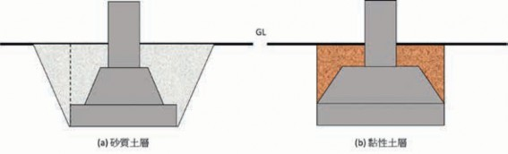
15°
圖3.14 固定基礎依土質不同的設計型式

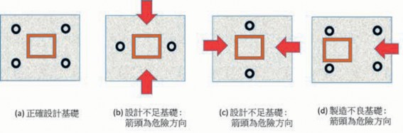
圖3.15 基礎螺絲設計與組裝的相關性分析
（二） 簡易型溫室基礎
簡易型溫室無固定基礎，可於現場施工設透過不同的地錨型式，進行快速的溫室定位安裝，但因現有颱風強烈侵襲下，地錨結構設計亦相當重要。其有如下常見的地錨型式設計。
螺旋線材地錨。
螺旋線材加銲鋼板。
螺旋板材地錨。
螺旋板材加銲鋼管。
簡易型插入性地錨。
地錨需抵抗通過結構計算得出作用在
立柱上的水平力和垂直力。
由於承載力隨地面條件而變化，因此應事先調查當地地質情況，以檢查地面強度、壓實狀態、是否存在掩埋物
體等。
地錨通過拉拔試驗，以進行測試以確認承載能力。
地錨的金屬件處於土壤下，須進行防蝕工程，以維護壽命。
（三） 基礎的設計流程
溫室基礎的設計流程須同步以兩個方面進行，一為溫室基礎的載重分析，根據溫室的型式設計、溫室結構與設施靜載重、所在地區的地理位置的風力載重與地震載重，地形地貌的影響因子，然後經溫室結構系統，傳遞於溫室柱底板與基礎螺栓的位置中心，包含Fx, Fy, Fz, Mxy, Myz,
Mzx等多項的力與力矩載重。
另一方面則進行溫室所在地的基礎地質分析，包含進行溫室基礎地質鑽探、溫室所在地的水文及設施排水設計，選擇基
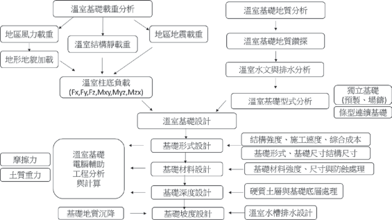
圖3.16 溫室基礎設計流程
礎型式及尺寸結構設計。並考量基礎材料強度、尺寸及防蝕處理。計算摩擦力、土質重力、拉拔力及地質鑽勘的數據的綜合分析計算基礎的深度設計。而考量溫室的水槽排水模式及基礎地質的沉降，進行基礎的坡度設計。
十一、溫室結構元件連接設計
當溫室結構自重及所受外力載重 (如
風力、暴雨、地震) 作用時，溫室構造系統支撐架結構係經由屋頂的被覆面材、繫件、桁樑、樑構件、柱構件、斜撐桿件、螺栓鎖固或銲接、基座錨定等，將外力傳
遞至基座，傳至大地。故每個連接部位設計均將影響其整體或局部之穩定性及力的傳遞，設計時應將各接合部位予以檢核，以確認是否能符合分析設計時設定的條件。
接合分析將包含接合構件 ( 如樑、柱、桁架、屋架等) 與連接件 (如螺栓、自攻螺絲或銲接等)。連接設計須使接合後的構件能傳遞各種載重組合的最大載重，並需注意接合點之偏心問題及腐蝕因素，往往結構的失穩及未來的破壞均起因於此。
常見的結構連接設計主要有螺絲接合、銲接接合、鉚釘接合、膠合及其他方法。

（一） 鋼結構螺絲接合
螺絲當爲結構用接合其分類、尺寸、
規格材料標準、材質控制以及性能認證等，均應依國際與國家標準之規定。螺螺栓長度設計，請外加使用之墊圈厚度，並選擇鎖緊後螺栓長度在螺母外部具有三個或更多螺紋的螺栓長度。使用扳手、衝擊扳手或類似工具鎖緊螺栓。使用雙螺帽或其他防鬆機制以免鬆動。
高強度螺栓接頭的組裝要特別注意連
接構件的接觸面，並確保糾正任何扭曲，翹曲或彎曲。如果連接件之間存在間隙，從而降低了滑動強度，則插入一塊填充板以對此進行補償。對接合面的摩擦表面進行適當的表面處理，以確保摩擦力。組裝之前，請先清除氧化皮、浮銹和灰塵、除油、油漆等。螺栓長度是緊固後長度加上適當長度，以避免發生由於螺釘長度不足而導致的緊固失敗。高強度螺栓的鎖固須放置墊圈在螺栓頭下方和螺母下方，然後鎖固螺母。使用保養良好與檢驗合格的工具，以鎖固螺栓，以獲得標準的螺栓張力。鎖固螺栓，須以正確的鎖固程序以確保所有螺栓都能有效工作。高強度螺栓以沖孔製孔之板厚度不超過13mm。如果板厚超過13mm，將使用鑽孔或雷射加工。
安裝基礎螺栓，使用模板將基礎螺栓
正確定位。基礎螺栓使用雙螺母和墊圈，螺栓的末端在螺母外側應具有三個或更多螺紋。當嵌入混凝土中時，可能無法使用雙螺母。可通過使用型鋼、加強筋等來精確地保持基礎螺栓，並進行固定，以使其不產生運動，不產生下偏斜等。
自攻螺絲接合應依據詳細之結構分
析後做合理的施作配置，以期能精準正確的各部才有效的緊固結合，達到構造的力安全的目的。螺絲應注意其品質說明，應包括螺絲的頭部種類，鑽頭形式機械的品質，包括其表面硬度、心部硬度、硬化層深度、熱處理、表面處理等，以供確認符合規定。螺絲的長度基本上須多於其欲連結材料整體厚度9.5～12.7mm，螺絲穿過鋼板至少三個螺紋，螺絲接合穿過接合部分的各元件，不能造成元件間有空隙與分離情形產生。用於型鋼結構之螺絲須以鍍鋅、鍍鋁或含高分子保護之螺絲。但與型鋼構材之鍍鋅層相較之下，螺絲鍍鋅厚度則較薄，如在連結較厚的鋼板或多層鋼板時，因穿刺時所產生之熱量將影響螺絲鍍鋅量的損失，或螺絲連結部分暴露於戶外或置於濕氣充分之處時，螺絲須再以予防銹塗裝以防止鏽蝕。
（二） 鋁合金螺栓接合
用於鋁合金構件的螺栓和螺帽可為鋁合金，不銹鋼，鍍鋁鋼或鍍鋅鋼；墊圈用於主體結構中的螺栓和螺母。墊圈的材料應與螺栓相同。
與異種金屬接觸時將鋁合金構件與鋼
螺栓、螺母、墊圈、鉚釘結合，以及與鋼或類似異種金屬接觸或結合時，視情況而定進行絕緣處理以防止電位差腐蝕。用於連接鋁合金構件的螺栓必須鍍鋁或鍍鋅。如果鋁合金部件與鋼或相似的異種金屬接觸，則鋁合金和鋼或相似的異種金屬接觸表面均應塗一次鉻酸鋅底漆或在裝配前進行填縫。在結構強度符合下，兩金屬間可夾入塑膠、橡膠等，以使其電氣絕緣。
鋁合金構件避免與鹼性材料直接接觸，
如混凝土、石膏和磚。在潮濕環境中安裝在混凝土，水泥砂漿或石膏中時，需在部件的嵌入表面上塗防潮漆， 如瀝青塗料。
當鋁合金與木材，土壤等接觸時， 如
於潮濕環境極易造成腐蝕。在潮濕環境中鋁合金與土壤或木材接觸的地方，請在兩者的接觸面上塗上鋁粉漆或瀝青塗料等。當在潮濕環境中接觸多孔材料時，在材料表面塗上塗料，以抑制水分吸收。在沿海
等嚴酷的腐蝕環境中，可使用鋁塗料進行防銹塗層。鋁合金塗層之基材表面處理，包含酸洗、鹼洗、拋光，另於鋁合金構件塗層的底漆可使用蝕刻底漆。
鋁合金間之接合使用鋁合金铆接。
鋁合金鉚釘孔的直徑需略大於標稱軸徑，控制在6％以內。鋁合金鉚釘打設原則上於低溫下施行。鉚釘接合原則上使用機械打擊，鉚釘要完全填充鉚釘孔，且鉚釘頭與孔成同心，與構材之表面良好接觸。組合材於組合前預先修正，避免組合後產生歪斜、扭曲等。接合部預先使用螺栓緊固後，再打鉚釘。接合部之鉚釘及螺栓孔，必要時使用邊磨機修邊，使孔位一致呈圓形。此時不得使用擴孔釘擴大孔徑。完成打設之鉚釘不得有下列缺失，包含有鬆弛者、形狀不正常者、頭部與軸心不一致者、頭部有裂痕者、頭部與構材面不密接者，打設鉚釘時須避免損壞構材。
（三） 銲接連接設計
銲接接合作業需由銲接專業工程師，
經銲接製程設計，指揮督導具有相關證照合格之銲接技術人員，執行銲接作業。
銲接面在焊接前須先除去水分、灰
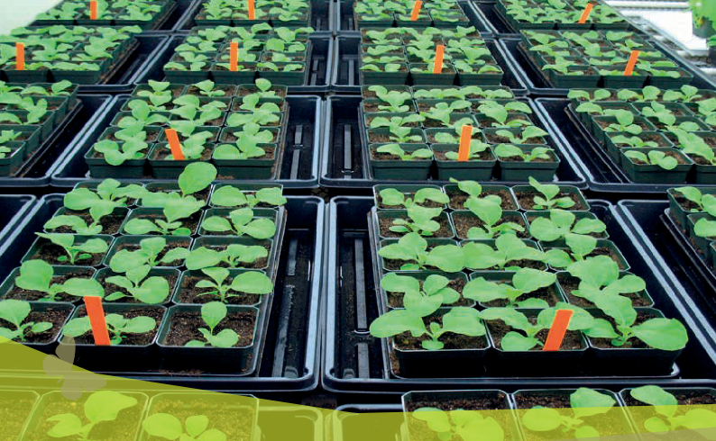
塵、銹、油、塗料及其他不純物。為使銲接後構造物的形狀正確，由銲接形式與銲接順序推估銲接完成後的最小變形量，必要時使用預置偏量或其他控制法預先處理。銲接元件之尺寸，須考慮銲接而引起的收縮、變形及銲接加寬等因素預作處理。接頭之開口須正確加工至設計指定的形狀。銲接材料的結合用適當的模具等方法正確結合。角銲部分需密接，對銲的接頭形狀須一致，並以正確的組合能保持正確接頭角度、間隔與位置之方法接合。焊條須保存於不吸溼氣的環境中再行使用。
於安全且適當的施作環境下，選用正
確銲材及銲接機具，調整適當電壓電流，以正確的位置、順序、方向、速度、形狀進行銲接作業。銲接作業的方式及順序的選定需以能使撓度及殘留應力達到最小之程度，並能防止氣泡、銲渣的混入。
構材之形狀、尺寸有偏差時須修改。
因銲接熱所產生的撓度，使用機械或加熱矯正。但加熱溫度約650℃以下。銲接完成後銲渣必須清除，清除銲跡、銹、銲渣及油污後，需依施工設計塗裝塗層於清潔乾燥面的銲接面上。

第四節 溫室構造優化設計
一、溫室所面臨的特殊環境載重分析
高溫、高濕、高輻射為熱帶及亞熱帶
地區的氣候型態，高熱、強風、暴雨則為其常見的三大環境載重。以台灣為例，地理上由於北迴歸線的穿越，熱帶與亞熱帶氣候南北不到400公里間，氣候型態就有相當大的差異。再從地形地貌岩岸、沙岸、盆地、台地、丘陵、山地、平原造就氣候變化的多樣性。而台灣幾大山脈的南北直列，讓台灣東西向不到200公里間，從東臨太平洋海岸、花東縱谷、中央山脈、西部丘陵、平原、沙岸，更有海上的離島，其高度線從海平面到3,000多公尺的急遽變化，更造成更多樣的氣候變化。
台灣常見氣候冬天天氣依然寒冷，東北季風強勁，但隨著各地理位置不同，地形地貌的變化，其風的形勢有所不同。而春天的梅雨季造成的連續下雨潮濕的天氣，夏天酷熱，且颱風多，暴雨頻繁， 讓這在世界上不算大的島嶼，卻有極多樣的天氣模式。加上近年來全球的強烈氣候變遷，強風暴雨，已成為此地區的農作物栽培持續會面臨的嚴苛挑戰，往往強颱侵襲下溫室受損嚴重。因此以溫室進行的農
作物栽培，將可提供較穩定的栽培環境，能提高產能及穩定的農作物供給模式。但溫室的結構須承受外部環境的強風暴雨侵襲，溫室的內部環境也須面臨劇烈熱能累積，相對於如荷蘭之溫寒帶溫室，這都是我國溫室設計所需面臨挑戰的特別課題。
各型農業設施的外部結構，都會面臨嚴苛的天候因素挑戰。以台灣溫室夏天所面臨最大的挑戰即是颱風的侵襲及瞬間的大雨，這對基於成本考量下非高安全係數設計的溫室有極大的傷害風險。加上台灣溫室於沿海有大量的應用，故對耐蝕性亦有相當的考量。目前在台灣使用之農業栽種設施會遭遇的外在因素包含靠近海邊沿岸的區域鹽分較重，金屬結構易受鹽害銹蝕，而靠近工業區的區域易受酸雨或化學物質侵襲，導致使用年限不長。內在因素則因為植物栽種的溫濕度環境需求，易造成栽種設施結構銹蝕。
而農業投資仍為勞力密集獲利不易，故成本是一大重點。因此開發輕量化、高強度結構、高耐蝕性的台灣特色的農業栽種設施及材料結構，極具有硏究開發價值，另施作容易度及成本控制也是考量的重點。

溫室抵抗環境載重的設計原理與原則，並依造溫室所在地點的地形、地貌及強風暴雨的經驗數據，以進行溫室外部環境載重抵抗設計，並考量溫室內的農作物所需的作業模式、需求空間動線及溫溼度參數進行溫室的內部環境控制設計，以完成溫室的總體規劃設計。
在溫室結構材料上，以材質優化、形狀設計、表面處理等三項材料製程設計與控制技術，以提升結構材料的結構強度、輕量化省成本及高耐蝕壽命性。並在溫室防颱強化上，結構強化、內部強化、外部強化及破風強化等四項防颱設計技術，以提升各種面對不同颱風等級時的防颱策略技術。
二（一、）溫環室境破載壞重模式分析
溫室的功能以農作物之栽培為主要目的，基於功能性與經濟性考量，溫室設計非如同住宅及工廠之設計般具有相當高的安全係數，故針對溫室所面臨的環境載重需整合性的考量設計與分析，以同時符合安全性、成本性與壽命性的綜合考量。
在熱帶亞熱帶溫室環境載重中，高輻射的陽光、溫度季節冷熱與日夜溫差的變異、季節風速風向與日夜氣流的變異，氣候變遷所致的極端氣候型態的變異，反而
讓溫室結構系統所需面臨的環境載重變化性還大於一般的民生住宅建築系統。
（二） 結構載重
溫室所面臨的結構載重包含自身之重力載重、大自然之環境載重，及氣候變遷所帶來的新衝擊載重。而這些載重的模式又包含了強度載重、變動載重、衝擊載重、反覆載重。
溫室實際所面臨的強風暴雨，跟地形地貌有很大的相互關係，瞬間的陣風強度往往會超出氣象報告所能完整預測。而台灣地處亞熱帶，其所面臨的強風暴雨，已成為溫室設計所必須面對的嚴苛挑戰。
（三） 材料結構破壞
溫室以封閉型式設計形成結構強度，但破壞均往往發生於一起點，而起點經常是弱點或奇異點，一旦破壞形成，則會造成連鎖的破壞，跟開始的封閉設計有相當的不同，故任何破壞的細節均是考量的重點。而任一材料的破壞模式主要有應力
破壞、應變破壞、疲勞破壞，除了拉力、剪力、扭力等瞬間的力量形式，長期所受的潛變與疲勞破壞亦為考量重點。以材料破壞的最大比例其實是疲勞破壞及腐蝕破壞，因其破壞的模式，往往於平時中低負荷的累積，而形成不易發現的破壞起點，
一旦，有重大負荷時，由此擴大破壞。
（四） 溫室連接機構失效造成集中載重與載重的能量傳遞失效
材料結構扮演的角色即要面臨載重時
的力量與變形的抵抗與傳遞。
最經濟有效的結構設計，在於當載重來臨時能讓多項元件去共同承擔這載重，並將此載重快速地傳遞到地面，讓大自然的衝擊能回到地球上。如桁架、斜撐等構成結構上的三角形結構，其讓原本較難承受的橫向載重，可利用鉸連結的力量傳遞
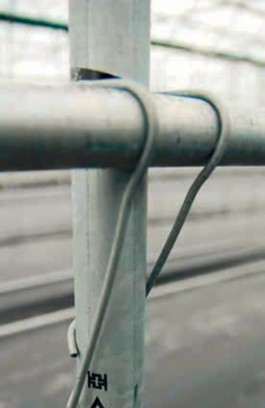
圖3.17 簡易溫室彈簧夾連接件
方向轉換成軸向載重，如此只要能抵抗挫曲破壞，則可形成相對方向的力量抵銷及軸向元件強載重的能力展現。
但如造成某元件的集中載重，其將形成破壞的關鍵。同樣的如扮演能量傳遞的連接件失效，則載重將形成過度的集中而致破壞，而由一點破壞的突破，往往連鎖反應，造成結構系統性的破壞。
故連接件在溫室結構上往往扮演極為重要但又被常忽視的元件。以現有簡易溫室的常用連結件彈簧夾 (如圖3.17)，其連結材料強度不足、接觸面積小、磨擦力不足，力的傳遞能力嚴重不足。
（五） 材料腐蝕破壞
除了材料受力結構型的破壞，材料腐蝕破壞更是破壞的重點，主要的腐蝕因子包含物理腐蝕、化學腐蝕、電化學腐蝕，更包含生物腐蝕。
以金屬材料為主結構的溫室其破壞的原因經常是腐蝕所導致的材料失效，尤其在受到高溫高濕下促進化學、電化學及生物的腐蝕環境下，加速其腐蝕的破壞，而其會具體降低材料原先的預期強度，形成主導引起破壞的起點。
其具體影響的就是溫室的可靠度與安全性，也直接影響其壽命性。以錏管溫室為例，因常規管材長度因素，常需接管以

增加長度，而接管點常為直接大小縮管套接，然後以自攻螺絲直攻鎖付 (如圖3.18)此將造成螺絲孔降低原有材料強度，螺絲往往與原有材料材質不同，易成電化學腐蝕，形成破壞點。原有材料交接處易累積化學性液體，形成化學腐蝕及電化學腐蝕。故當全新時尚有支撐力，當累積一段腐蝕時間後，此點將形成破壞的起點。
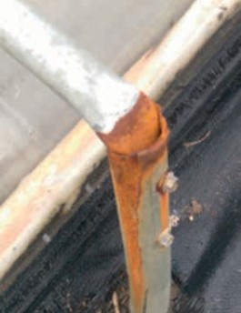
圖3.18 溫室錏管接管與自攻螺絲鎖付
三、溫室結構面對颱風的破壞模
（一）式颱分風析氣象預報
在熱帶亞熱帶颱風為一常見的風力破壞模式，現代化的氣象偵測技術不斷進步提升，所以颱風來臨前均可由各國氣象局得知其可能的路徑、風力等級、暴風半徑大小、瞬間最高風速等訊息。但颱風的軌跡及其變化受相關區域的地形地貌及其亦持續變化的即時氣象環境影響，往往多國的氣象站的預報有不一樣的推測 (如圖 3.19)。但總能提高相當的關注以利提前地進入防颱準備作業。
（二） 颱風的行徑與風力合成
颱風以逆時針方向圍繞颱風中心旋轉，形成一具有中心近似無風的颱風眼，以不定的軌跡往前移動。故由此颱風的力量合成分析圖 (如圖3.20)，可得知其路徑的差異可能造成的攻擊路線、風力大小及方向的改變。
（三） 颱風長期登陸與風力路徑統計分析
此可由長期的風力路徑統計圖 (如圖
3.21)，風力登陸分析圖 (如圖3.22)，進行颱風對所在溫室的攻擊可能方向，以利進行防颱超前部署。
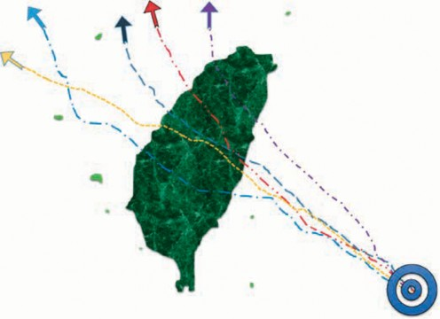
圖3.19 各國氣象局的颱風路徑預測

圖3.20 颱風的行徑與風力合成圖

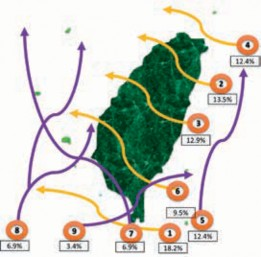
圖3.21 風力路徑分析 (1911～2017)
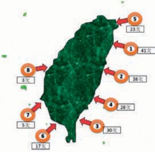
圖3.22 風力登陸分析 (1911～2017)
（四） 颱風的等級與風速
颱風的風力等級及風速亦可參考台灣中央氣象局之風力分級表 (如表3.1)。
（五） 基本設計風速
台灣本島及離島各地鄉鎮可參考風速等級進行風力載重設計。風速等級分為下列各區：
表3.1 氣象局風力分級表
級數 | 風的名稱 | 速度 (m/sec) |
0 無 風 0～0.2
1 | 軟風 | 0.3～1.5 |
2 輕 風 1.6～3.3
3 | 微風 | 3.4～5.4 |
4 和 風 5.5～7.9
5 | 清風 | 8.0～10.7 |
6 強 風 10.8～13.8
7 | 疾風 | 13.9～17.1 |
8 大 風 17.2～20.7
9 | 烈風 | 20.8～24.4 |
10 狂 風 24.5～28.4
11 | 暴風 | 28.5～32.6 |
12 颶 風 32.7～36.9
13 | 颶風 | 37.0～41.4 |
14 颶 風 41.5～46.1
15 | 颶風 | 46.2～50.9 |
16 颶 風 51.0～56.0
17 | 颶風 | 56.1～61.2 |
桃園市： 各區。
新竹縣： 新豐鄉、湖口鄉、新埔鎮、關西鎮、橫山鄉、尖石鄉。
台中縣： 和平鄉。南投縣：信義鄉。
台南市： 七股區、中西區、東區、南區、北區、安平區、安南區。
高雄市： 林園區、大寮區、大樹區、燕巢區、大社區、仁武區、鳥松區、鳳山區、橋頭區、岡山區、梓官區、彌陀區、永安區、茄萣區、路竹區、湖內區、桃源區、新興區、前金區、苓雅區、鹽埕區、鼓山區、旗津區、前鎮區、三民區、楠梓區、小港區、左營區。
屏東縣： 佳冬鄉、林邊鄉、東港鎮、新埤鄉、來義鄉、泰武鄉、萬巒鄉、潮州鎮、竹田鄉、崁頂鄉、南州鄉、萬丹鄉、新園鄉、麟洛鄉、瑪家鄉、內埔鄉、長治鄉、屏東市、九如鄉、鹽埔鄉、里港鄉、高樹鄉、三地門鄉、霧台鄉。
宜蘭縣： 大同鄉、三星鄉、員山鄉、羅東鎮、宜蘭市、礁溪鄉。
花蓮縣： 富里鄉、卓溪鄉、萬榮鄉。
(3) 每秒37.5公尺區
新北市： 烏來區、新店區、三峽區、五股區、蘆洲區、三重區、泰山區、新莊區、板橋區、中和區、永和區、土城區、樹林區、鶯歌區、林口區、八里區。
(2) 每秒42.5公尺區
台北市。基隆市。
新北市： 貢寮區、雙溪區、坪林區、瑞芳區、平溪區、石碇區、深坑區、汐止區、萬里區、金山區、石門區、三芝區、淡水區。
屏東縣： 車城鄉、牡丹鄉、枋山鄉、獅子鄉、枋寮鄉、春日鄉。
宜蘭縣： 南澳鄉、蘇澳鎮、冬山鄉、五結鄉、壯圍鄉、頭城鎮。
花蓮縣： 玉里鎮、瑞穗鄉、豐濱鄉、光復鄉、鳳林鎮、壽豐鄉、新城鄉、秀林鄉。
台東縣： 達仁鄉、大武鄉、太麻里鄉、長濱鄉。
(1) 每秒47.5公尺區
花蓮縣： 花蓮市、吉安鄉。屏東縣： 恆春鎮、滿州鄉。
1. 台灣本島地區
台東縣： 金峰鄉、卑南鄉、台東市、
東河鄉、鹿野鄉、延平鄉、關山鎮、池上鄉、海端鄉、成功鎮。
(4) 每秒32.5公尺區
新竹縣： 五峰鄉、北埔鄉、峨眉鄉、竹東鎮、寶山鄉、芎林鄉、竹北市。
新竹市。苗栗縣。
台中市： 東勢區、新社區、太平區、石岡區、豐原區、潭子區、神岡區、大雅區、大肚區、龍井區、沙鹿區、梧棲區、清水區、后里區、外埔區、大安區、大甲區、中區、東區、南區、西區、北區、北屯區、西屯區、南屯區。
彰化縣： 伸港鄉、線西鄉、和美鎮。南投縣： 仁愛鄉。
雲林縣： 口湖鄉、水林鄉、四湖鄉。嘉義縣： 布袋鄉、鹿草鄉、太保市、六腳鄉、朴子市、東石鄉。
台南縣： 永康區、歸仁區、新化區、左鎮區、玉井區、楠西區、南化區、仁德區、關廟區、龍崎區、官田區、麻豆區、佳里區、西港區、將軍區、學甲區、北門區、新營區、
後壁區、東山區、六甲區、
下營區、柳營區、鹽水區、善化區、大內區、山上區、新市區、安定區。
高雄縣： 阿蓮區、田寮區、旗山區、美濃區、內門區、杉林區、六龜區、茂林區、甲仙區、三民區。
(5) 每秒27.5公尺區
台中市： 烏日區、霧峰區、大里區。彰化縣： 鹿港鎮、福興鄉、芳苑鄉、大城鄉、二林鎮、埔鹽鄉、
竹塘鄉、埤頭鄉、溪湖鎮、溪州鄉、二水鄉、彰化市、花壇鄉、芬園鄉、秀水鄉、大村鄉、員林鎮、社頭鄉、埔心鄉、永靖鄉、田尾鄉、北斗鎮、田中鎮。
南投縣： 草屯鎮、南投市、名間鄉、中寮鄉、國姓鄉、埔里鎮、魚池鄉。
雲林縣： 麥寮鄉、台西鄉、東勢鄉、崙背鄉、褒忠鄉、元長鄉、北港鎮、土庫鎮、二崙鎮、西螺鎮、虎尾鎮、大埤鄉、荊桐鄉、斗六市、斗南鎮、古坑鄉、林內鄉。
嘉義縣： 新港鄉、水上鄉、溪口鄉、
蘭嶼：每秒65公尺。
綠島：每秒65公尺。
彭佳嶼：每秒57公尺。
東吉島：每秒45公尺。
馬祖：每秒42公尺。
琉球：每秒40公尺。
金門：每秒35公尺。
澎湖縣：每秒33公尺。
四、溫室防颱工程設計
基於結構安全、環境控制、作業方
便、成本合理，如何提升溫室的防颱能力，並非將溫室如民生或工業建築般，以大型的鋼構或鋼筋水泥的高安全結構設計，而應研究如何提高跨距的有利作業環境下，同時又具輕量化及高安全性結構，且控制在合理成本。這種方法則需導入兩項設計思維 (如圖3.23)，一為溫室材料結構的優化設計，此乃利用材料工業技術的進
步性，以材質、形狀、形貌、機能的四項組合技術，提升溫室結構的基本強度。
(6) 每秒22.5公尺區：
南投縣： 竹山鎮、水里鄉、集集鎮、鹿谷鄉。
台南市： 白河區。
民雄鄉、大林鎮、梅山鄉、竹崎鄉、中埔鄉、番路鄉、大埔鄉、阿里山鄉。
嘉義市。
另一思維設計為溫室組合抗颱強化設計，溫室以平日正常的風速下的運維為主設計，但預留颱風來臨時的因應設施設計，把防颱當作對颱風的事先關注與預測、颱風來襲前的超前部署、颱風侵襲後的持續改善設計，如此將以合理的成本與合理的防颱設施進行防颱工程設計。
（一） 溫室材料結構優化技術
溫室材料結構優化如圖3 . 24 將以材質、形狀、形貌、機能等四項技術提升。
提高材料性能包含強度、剛性、韌
性，可立即提高溫室之結構強化與性能優化。一般金屬材料的成本主要以其合金元素定價，而以材料的合金強化、熱機處理的晶粒細化、應用塑性加工的變形硬化，均可以促進材料的結構強化與輕量化，故強度提高一倍的材料，其材料成本很可能只提高10～ 20％，此可經材料的屈服強度、抗張強度、抗彎強度測試以證明新材料結構的優勢。
如此將對溫室結構設計有很大的進步空間。一般規範結構用鋼強度為400MPa以上即可，但相對590MPa與780MPa的高強度鋼材設計上就有很大的強度與重量差
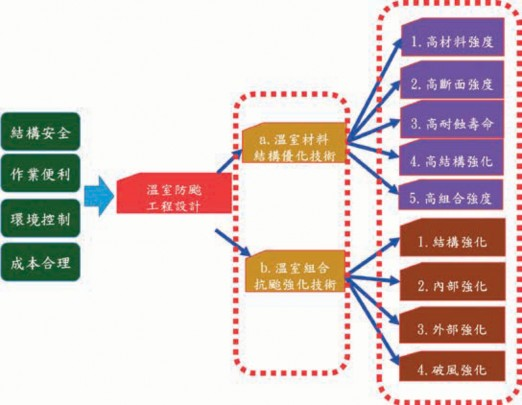
圖3.23 溫室防颱工程設計
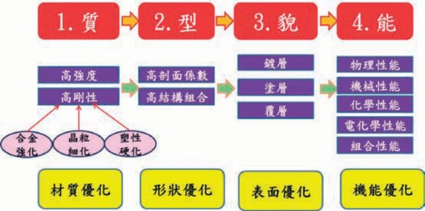
異，這在汽車工業材料的應用設計上，就有非常明顯的進步空間。
結構材料的型式優化是在不改變材料
材質即可提升的新優勢材料設計，本項如與上項結合，將可促進結構件的材質強化與剖面型式優化的同步強度提升。而此項優化設計也將促進金屬型材成形與加工設備系統的進步，如何高速且成功的針對高強度鋼材進行更高剖面係數的型材自動化連續成形及後續的開孔加工，也將是型材成本與品質的關鍵。建構高速高強度的成形機組及自動化的雷射切割系統將是材料解決的同步技術。
材料結構之耐蝕處理為提升高壽命
性的關鍵，進行新材料的處理優化將包含鍍前處理、鍍層處理、鍍後處理、塗層處理、複層處理，以提升設施農業應用的強化抵抗環境能力。而此為完整的金屬表面處理技術，鍍層、塗層與覆層的材質選擇與方法設計，均為耐蝕性能與成本的關鍵，需綜合設計考量。
除了材料的物理性能 (如熱傳性能、低
密度、高反射性)、化學性能 (耐侵蝕、耐腐蝕)、機械性能 (高強度、高剛度、高韌性) 的提升外，亦有材料具有良好的生物性
能 (微生物抑制、抗菌性、抗生物腐蝕)。
（二） 溫室組合抗颱強化設計
單棟溫室風壓局部強化
溫室受風力載重時，屋面的邊緣區域往往是風壓局部強化區域 ( 如圖 3.25)，可以屋面長與寬的10％，進行強化設計。
連棟溫室風壓局部強化
連棟溫室受風力載重時，最兩側的屋面的邊緣區域是風壓局部強化區域 (如圖3.26)，以屋面長與寬的10％，進行強化設計。中間棟溫室則側邊仍有風壓局部強化區域。
溫室建築群的風壓局部強化
溫室建築群受風力載重時，考慮間隔風道之影響及最兩側的屋面的邊緣區
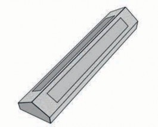
圖3.25 單棟溫室風壓局部強化設計
域是風壓局部強化區域 (如圖3.27)，以屋面長與寬的10％，進行強化設計。
以科學化的溫室設計與分析方法、適
當的元件材質選用與處理技術及正確的連結與施工方法，以提高溫室的可靠度與使用壽命。結構組合使用具有結構強度且耐振動的連接件，依溫室結構位置搭配合適的型材構件，可以使溫室達到耐強風的結構強度。
對已建好的現有溫室及未來興建的溫
室應進行防颱分析及強化設計，以強化溫室內部及外部強化機制，經工程分析於溫室內部結構進行斜撐、拉桿、支撐桿等，可提升溫室耐風等級。
極高風險的颱風路徑經過區域之溫
室，增加溫室破風牆或破風網等強化結構，可提升溫室耐風壓等級。
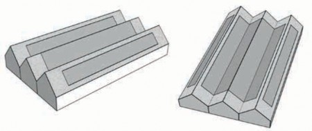
圖3.26 連棟溫室風壓局部強化設計
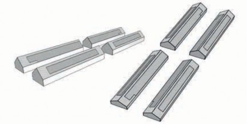
（三） 溫室防颱優化設計流程
溫室防颱設計可依據以下步驟方法進行：(如圖3.28)
依據溫室預定設立位置，以大範圍區
域進行歷史颱風路徑分析，蒐集整理氣象局颱風資料庫歷史資料，可得知區域颱風路徑經過方式及機率，並求得歷年颱風侵襲時最大風速、最大陣風、最大雨量等，加以分析探討可得知區域可能風向、風力
等級與颱風侵襲頻率。
藉由溫室所在區域的風場及雨勢資
料，並以溫室設立周遭的地形地貌加以探討，以計算分析溫室側面與正面的承受風力與風壓分布。
將溫室承受風力及風壓等級對溫室結構的影響，使用工程計算及模擬分析加以
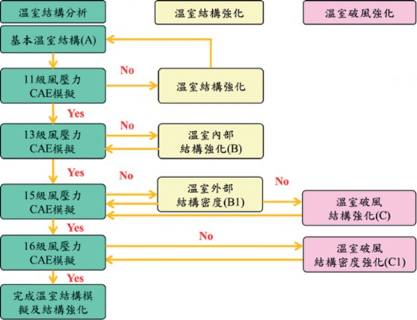
圖3.28 溫室防颱優化設計流程

探討，並進行溫室承受風壓等級一級的性能提升。
藉由溫室工程計算及模擬分析，對溫
室結構承受風壓後應力應變進行分析，以求得溫室各部件材料結構受力特性及相關安全係數。
依據溫室各部件之相關安全係數進行
材料結構的強化設計，並對過高安全係數之部件進行輕量化設計，以求得適合的溫室零件。
對於溫室部件組合結構以受風特性進
行電腦輔助工程分析，並改善修正部分材料結構強度，以提升溫室耐風力級數一級。
對於最適化的溫室材料結構組合，進
行內部強化與外部強化規劃，預先準備相關部件組合連接設計，使溫室在颱風侵襲時能承受較高之風力級數。
以溫室內部強化與外部強化的材料結
構設計，進行溫室結構電腦模擬分析，以提升溫室承受風力級數一級。
依據內部強化與外部強化設計方式，
提高溫室部件安全係數再進行溫室性能提升工程分析，使溫室性能能承受加載一級風力之風壓。
藉由增加溫室破風強化設計，並分析
控制破風結構之密度，可提升溫室防颱性能與可承受風壓，使溫室防颱強化性能提升一級。